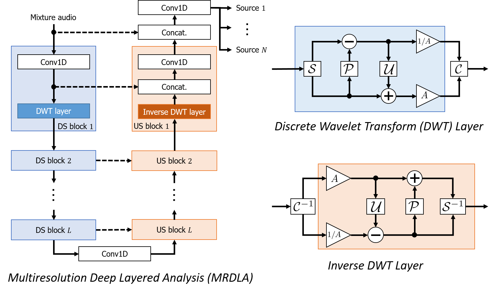
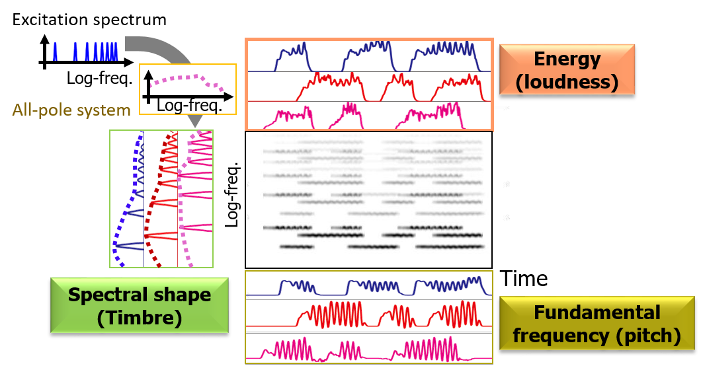
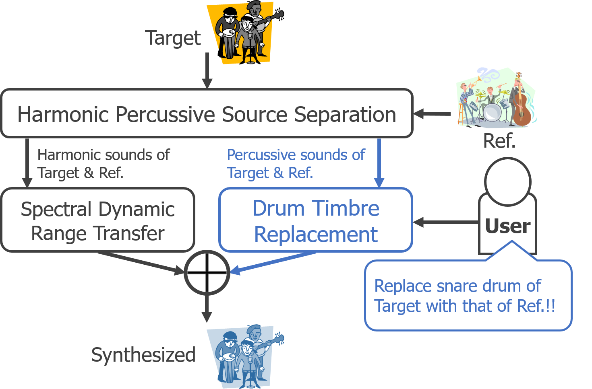

Multiresolution Deep Layered Analysis: End-to-end Music Source Separation Inspired by Multiresolution Analysis ¶

Focusing on the architectural resemblance between an DNN for end-to-end audio source separation and multiresolution analysis, we propose down-sampling (pooling) layers "reasonable" from the signal processing viewpoint, which has the perfect reconstruction property and the anti-aliasing mechanism. Using the proposed down-sampling layers, we further propose a multiresolution-analysis-inspired end-to-end audio source separation method, multiresolution deep layered analysis.
End-to-end音源分離用DNNと多重解像度解析の構造の類似性に着眼し，完全再構成性，アンチエイリアシングフィルタを備えたダウンサンプリング層を提案しました． さらに，それらの層を用いたend-to-end音源分離手法（多重解像度深層分析）を提案しました．
- Tomohiko Nakamura, Shihori Kozuka, and Hiroshi Saruwatari, “Time-Domain Audio Source Separation with Neural Networks Based on Multiresolution Analysis,” IEEE/ACM Transactions on Audio, Speech, and Language Processing, 2021. (to appear) , demo
- Shihori Kozuka, Tomohiko Nakamura, and Hiroshi Saruwatari, “Investigation on Wavelet Basis Function of DNN-Based Time Domain Audio Source Separation Inspired by Multiresolution Analysis,” in Proceedings of the 49th International Congress and Exposition on Noise Control Engineering, Aug. 2020, pp. 4013–4022.
- Tomohiko Nakamura and Saruwatari Hiroshi, “Time-Domain Audio Source Separation Based on Wave-U-Net Combined with Discrete Wavelet Transform,” in Proceedings of the 45th International Conference on Acoustics, Speech, and Signal Processing, May 2020, pp. 386–390. ,
Harmonic-Temporal Factor Decomposition for Unsupervised Monaural Source Separation of Harmonic Sounds ¶

We present an unsupervised monaural source separation method of harmonic sounds, harmonic-temporal factor decomposition, that encompasses the ideas of computational auditory scene analysis, non-negative matrix factorization, and a source-filter model.
計算論的聴覚情景分析，非負値行列因子分解，ソースフィルタモデルを融合した，教師なし調波音分離手法（調波時間因子分解）を提案しました．
- Tomohiko Nakamura and Hirokazu Kameoka, “Harmonic-Temporal Factor Decomposition for Unsupervised Monaural Separation of Harmonic Sounds,” IEEE/ACM Transactions on Audio, Speech, and Language Processing, vol. 29, pp. 68–82, Nov. 2020. , demo, code
- Tomohiko Nakamura, Kotaro Shikata, Norihiro Takamune, and Hirokazu Kameoka, “Harmonic-Temporal Factor Decomposition Incorporating Music Prior Information for Informed Monaural Source Separation,” in Proceedings of the 15th International Society for Music Information Retrieval Conference, Oct. 2014, pp. 623–628. , demo, [Travel Grant by the Tateishi Science and Technology Foundation]
Unsupervised Drum Timbre Replacement between Two Music Audio Recordings ¶

We propose a system that allows users to replace the frequency characteristics of harmonic sounds and the timbres of drum sounds of a music audio signal with those of another music audio signal without their musical scores.
楽譜情報なしでも2楽曲間で調波音の周波数特性とドラム音色を置換できるシステムを提案しました．
- Tomohiko Nakamura, Hirokazu Kameoka, Kazuyoshi Yoshii, and Masataka Goto, “Timbre Replacement of Harmonic and Drum Components for Music Audio Signals,” in Proceedings of 2014 IEEE International Conference on Acoustics, Speech and Signal Processing, May 2014. , demo
Fast Signal Reconstruction from Magnitude Spectrogram of Continuous Wavelet Transform ¶
We propose a 100× faster signal reconstruction algorithm from a magnitude continuous wavelet transform spectrogram (a.k.a. constant-Q transform spectrogram).
従来法に比べて約100倍高速な振幅連続ウェーブレット変換からの信号再構成（位相推定）アルゴリズムを提案しました．
- Tomohiko Nakamura and Hirokazu Kameoka, “Fast Signal Reconstruction from Magnitude Spectrogram of Continuous Wavelet Transform Based on Spectrogram Consistency,” in Proceedings of the 17th International Conference on Digital Audio Effects, Sep. 2014, pp. 129–135. , demo, [Travel Grant by the Hara Research Foundation]
Score Following and Automatic Accompaniment for Musical Performance During Practice ¶
We propose real-time (O(n) for # of notes) score following methods that can deal with musical performances including typical errors during practice (note insertion, deletion, and substitution errors, and arbitrary repeats/skips).
練習時によく起こる誤り（音符の挿入，脱落，置換誤りや任意の弾き直し，弾き飛ばし）を含む演奏に対して，実時間で動作する（音符に関して線形オーダ）楽譜追跡手法を提案しました．
- Tomohiko Nakamura, Eita Nakamura, and Shigeki Sagayama, “Real-Time Audio-to-Score Alignment of Music Performances Containing Errors and Arbitrary Repeats and Skips,” IEEE/ACM Transactions on Audio, Speech, and Language Processing, vol. 24, no. 2, pp. 329–339, Feb. 2016. , , demo
- Tomohiko Nakamura, Eita Nakamura, and Shigeki Sagayama, “Acoustic Score Following to Musical Performance with Errors and Arbitrary Repeats and Skips for Automatic Accompaniment,” in Proceedings of Sound and Music Computing Conference, Aug. 2013, pp. 299–304. , demo, [Travel Grant by the Telecommunications Advancement Foundation]
- c.f. Eurydice (Related MIDI Score Following System)